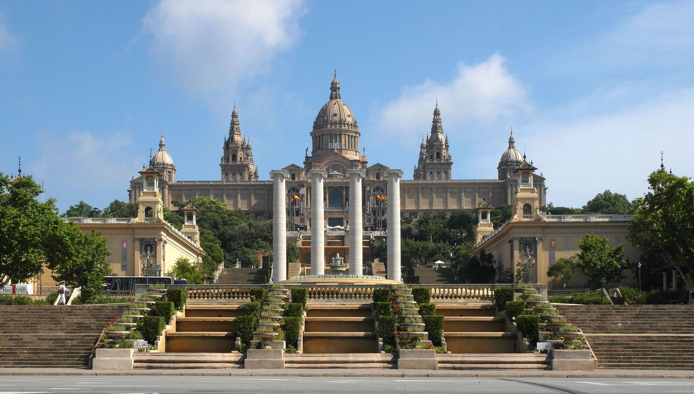
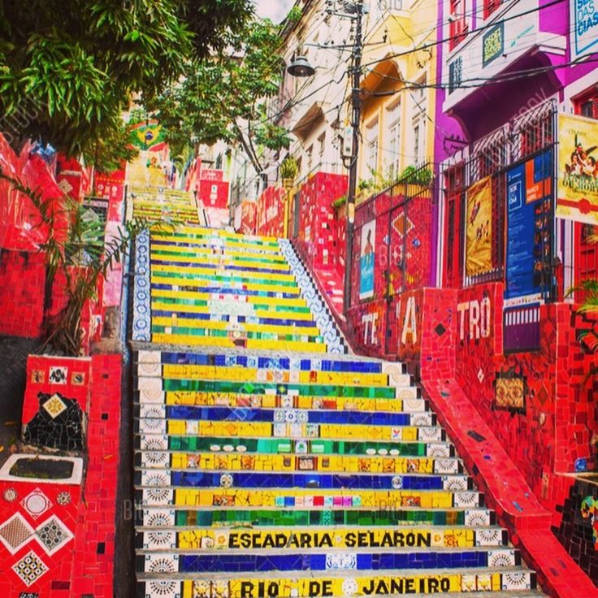
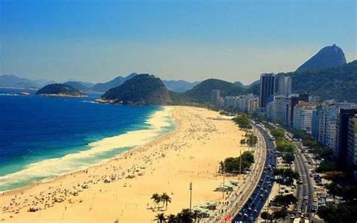

MUSEU NACIONAL
C'était l'un des plus anciens et des plus prestigieux musées de Rio. Il a été ravagé par un incendie en septembre 2018. Intellectuels, étudiants et chercheurs n'ont pas tardé à s'indigner, dénonçant de drastiques restrictions budgétaires dans le domaine de la culture responsables d'un manque de sécurité au sein du bâtiment. Ouvert en 1818, le musée possédait plus 20 millions de pièces, pour beaucoup parties en fumée, dont « Luzia », le plus ancien fossile humain d'Amérique latine découvert dans le Minas Gerais en 1970. Il datait de 12 000 ans.
L’ESCALIER SELERON
L’histoire de l’escalier Selaron commence en 1990 lorsque le Chilien Jorge Selarón, qui vivait à Rio, a commencé à restaurer un escalier négligé devant sa maison. Petit à petit. Il a recouvert les escaliers avec différents éléments décoratifs, tels que des carreaux, des mosaïques et des miroirs, en utilisant toujours les couleurs du drapeau brésilien. mais aussi des mosaïques venu du monde entier : bleu, vert et jaune. Il a dû vendre certaines de ses œuvres pour financer le projet d’escalier. Sur les 2 000 mosaïques utilisées dans l’escalier, 300 ont été peintes à la main par l’artiste. Il a qualifié sa pièce d’hommage au peuple brésilien. De nos jours. L’endroit est l’une des attractions touristiques de Rio de Janeiro. Situé entre les quartiers de Santa Teresa et de Lapa.
LA PLAGE DE COPACABANA
La plage de Copacabana est une plage de la ville de Rio de Janeiro, au Brésil. Considérée comme l'une des plages les plus célèbres du monde, elle est surnommée en portugais la Princesinha do Mar, soit la « princesse des mers ». Elle est l'un des emblèmes touristiques de la ville, comme le Corcovado ou le Mont du Pain de Sucre .
NOURRITURE BRESILIENNE
Le plus connu des plats traditionnels que l’on trouve à Rio de Janeiro est la feijoada. Les morceaux considérés comme peu nobles du porc (oreilles, queue, pattes…) sont cuits à l’étouffée avant de mijoter avec des haricots noirs, du riz, des légumes et de l’orange. Un plat sucré-salé succulent !